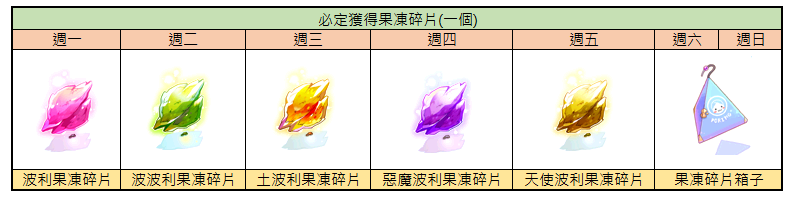
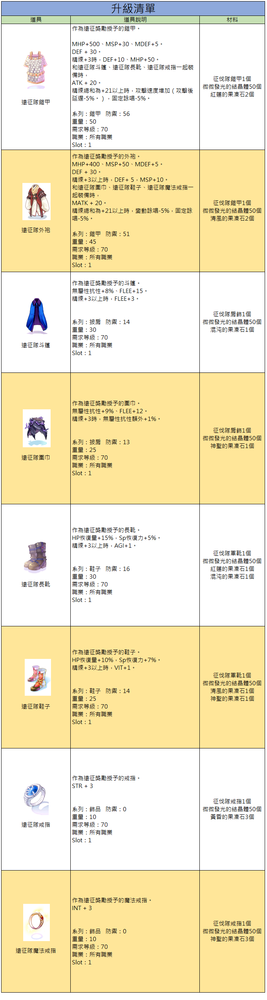
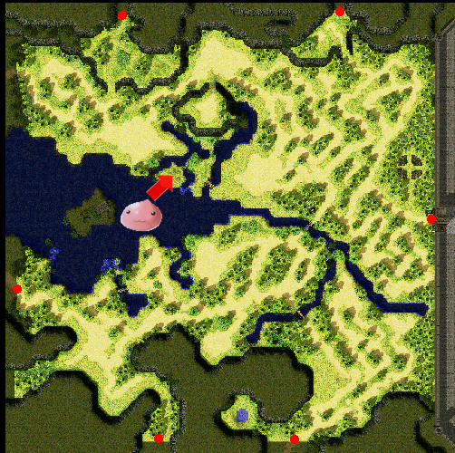
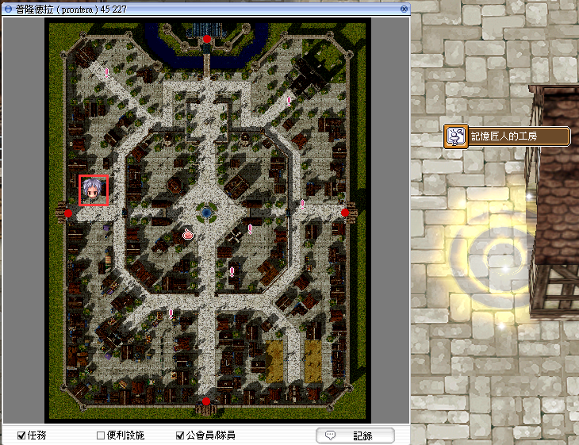

讀取日期中
讀取今日掉落中
完成波利村後可必定取得 1 個對應果凍碎片。
MEMORIAL DUNGEON GUIDE
今天該刷哪種果凍碎片、做成什麼果凍石，以及能升級哪些副本裝備，全部放在同一頁查清楚。
TODAY'S DROP
依瀏覽器目前日期自動選取；也可以直接點下方一週表格，預先安排要刷的碎片。
完成波利村後可必定取得 1 個對應果凍碎片。
| 週一 | 週二 | 週三 | 週四 | 週五 | 週六 | 週日 |
|---|---|---|---|---|---|---|

不是直接拿果凍石：週一至週五每個角色取得當日指定果凍碎片 1 個；週六、週日取得的是「果凍碎片箱子」，開啟後為隨機種類碎片。碎片湊滿同名 5 個後，才交給石頭加工師製作成果凍石。玩家實測為每角色每天可領一次寶箱。
STONE TO EQUIPMENT
點選果凍石即可反查裝備與需求數量。此處列出目前網站已有的 Lv.70 遠征隊及 Lv.80 殲滅隊直接材料。
波利果凍碎片 5 個，加工約 3 天。
裝備還需要原本的征伐隊／遠征隊基底，以及對應副本結晶體。點裝備材料總表可以查看完整組合。

RUN GUIDE
官方確認入口；副本內流程依樂園玩家實測整理，實際怪物與對話仍以遊戲內版本為準。

入口：艾蜜莉，prt_fild05 145, 235。圖片來源為樂園官方波利村公告。
隊伍中的每個角色都至少需要 Base Lv.30。樂園官方公告未標示上限；不要套用其他伺服器的 Lv.40～99 設定。
場地不大，核心是依序清怪並等待下一波。低等角色建議攜帶補品，有範圍技能會更快。
最後首領血量明顯較高，多人隊伍能縮短時間；通關後依正常出口離開。
玩家實測指出，外面的寶箱要等所有人離開且隊長關閉副本後才能正常領取。
REWARD POOL
官方表將寶箱拆成四組：前三組各隨機取得一項，第四組固定取得蘋果 3 個。
CRAFT & ENCHANT
果凍碎片不只是收藏品；先加工成果凍石，才能投入後續副本裝備升級。
入口位於普隆德拉 prontera 50, 227。找石頭加工師，以同名果凍碎片 5 個加工成對應果凍石，通常需等待 3 天，也可支付 5 個傑斯塔立即完成。

普隆德拉西側，prontera 50, 227。
蔬果附魔師位於 prt_fild05 174, 238，附魔對象為波利村紅蘿蔔與波利村大蔥。
SOURCE & STATUS
本頁只採用樂園官方資料與明確標示的樂園玩家實測；不確定內容不會冒充官方設定。